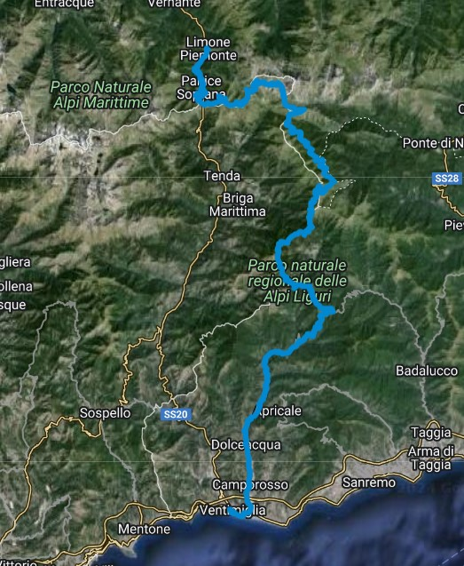
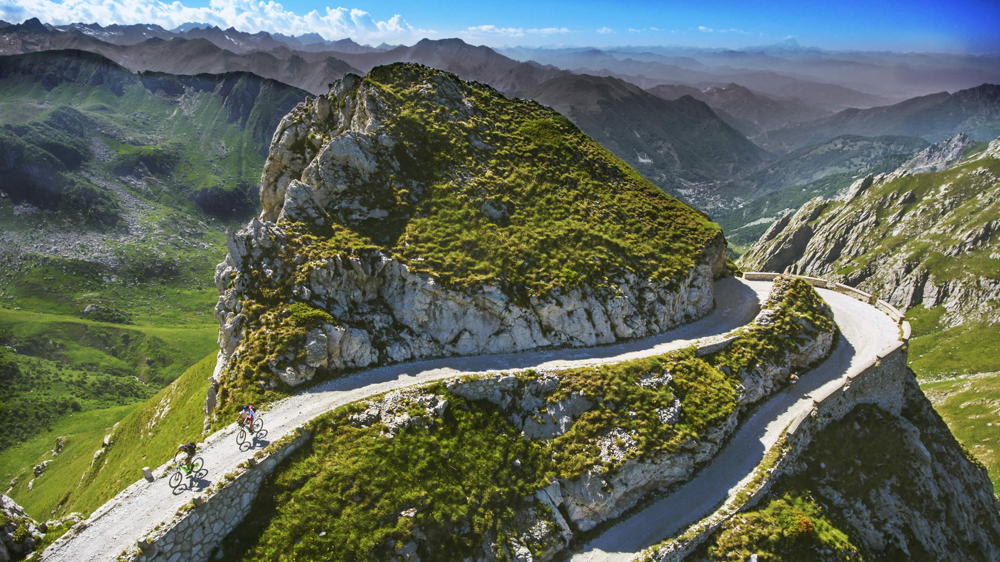
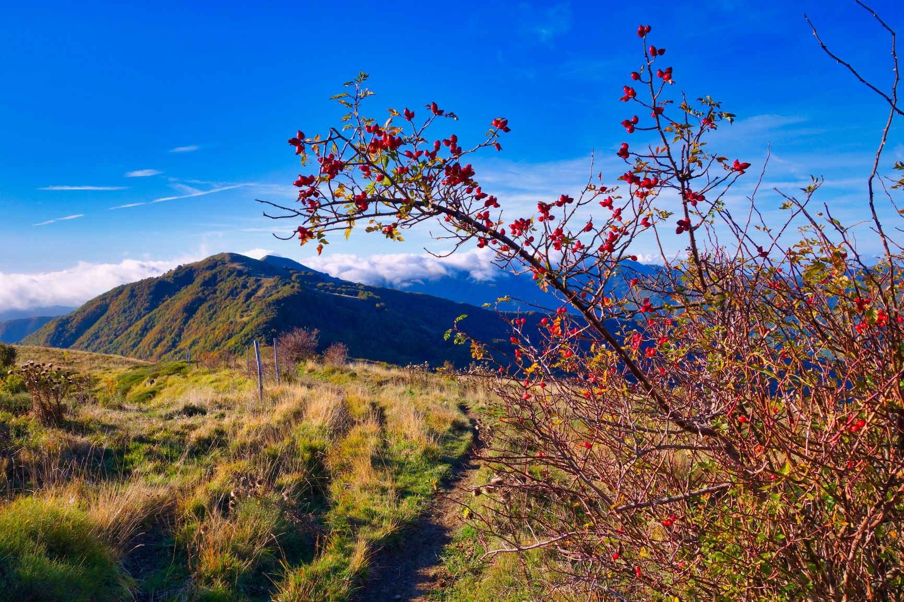
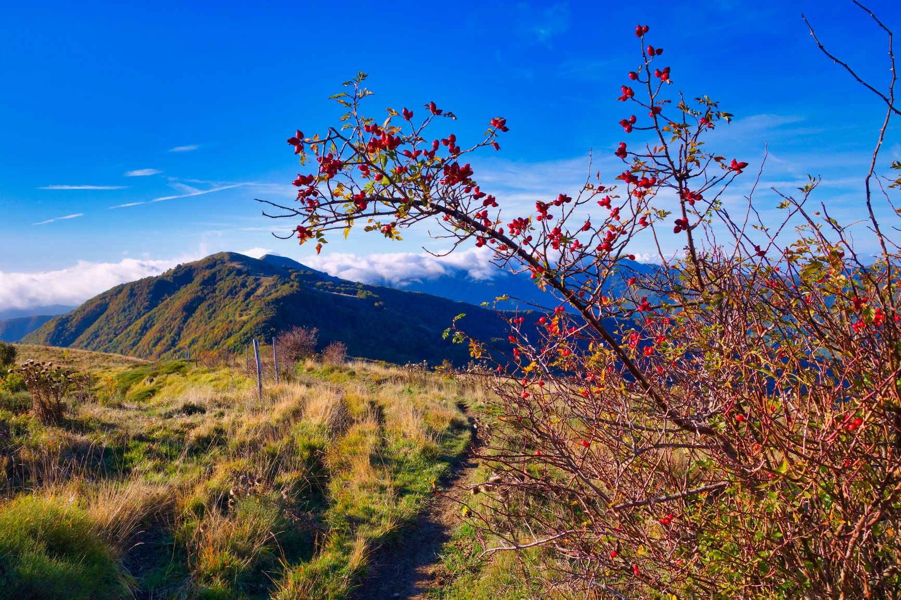

ALTA VIA DEL SALE

Si parte dalle stupende montagne limonesi fino ad arrivare alla riva del Mar Ligure, costituisce un perfetto ed unico itinerario per chi voglia vivere
nel giro di poche ore il clima alpino e quello marino, attraversando stupendi ambienti naturali e borghi storici. Questo giro, oltre a regalare
panorami mozzafiato, ha una storia importantissima per la popolazione ligure e piemontese, in quanto era una delle poche vie di commercio del
sale nelle valli cuneesi. Il tratto da percorrere è di circa 112 chilometri partendo dalla città di Limone Piemonte. Chiunque possieda una moto
con tassellate è sicuro che vivrà un'esperienza unica nel suo genere. Non ti spetta che andarlo a provare!!!!
FOTO DEL GIRO

 
